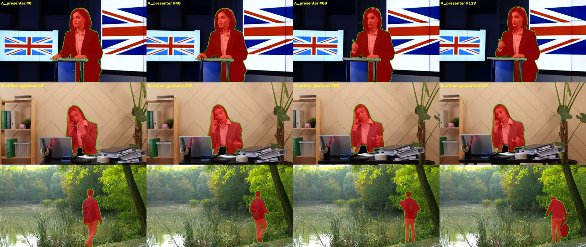
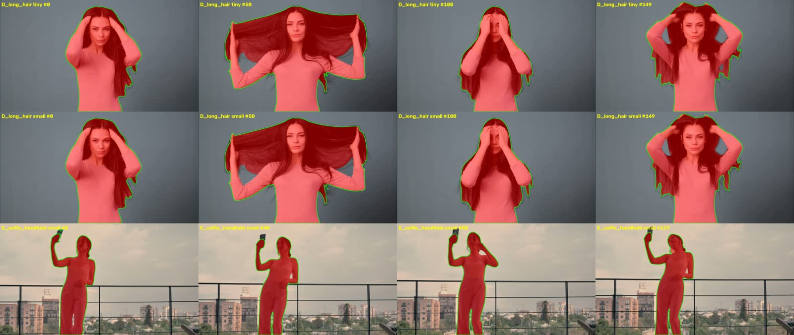

La chaîne a été testée de bout en bout : probe, proxy 720p, sélection du sujet par boîte et points, masque SAM 2.1 propagé, décor généré par FLUX.2 klein, compositing FFmpeg et export MP4. Le résultat est exploitable sur des clips courts. À condition de lancer SAM 2 en bf16, une vidéo de 5 s se segmente en moins de 25 s.
SAM 2.1 tiny, bf16 sur MPS, proxy 1280×720
par rapport au fp32, masques identiques à plus de 99 %
image 1280×720 en 4 étapes, FLUX.2 klein 4B, pic de 24 Go
pour 5 s de vidéo 720p, FFmpeg et libx264
En fp32, SAM 2 plafonne vers 2 images/s sur MPS, et le modèle small n'est pas plus lent que tiny : le goulot n'est pas l'encodeur d'image. Sous torch.autocast(bfloat16), les deux modèles passent à 6–7,5 images/s. Les masques bf16 recouvrent les masques fp32 avec un IoU moyen de 0,993 à 0,9996.
Chaque vidéo montre en haut la source et le masque SAM 2.1 tiny bf16, et en bas le sujet isolé sur damier et le composite sur le décor généré. Le prompt est une boîte et 2–3 points posés sur la première image. Les mesures portent sur 5 s de chaque clip.


Le clip de test imite un iPhone : HEVC stocké en 1280×720 avec une matrice de rotation de 90°, plus de l'audio AAC 48 kHz, sur 8 s. Les trois encodeurs restituent un vrai portrait 720×1280, avec l'audio et sans erreur de décodage.
| Export H.264 + AAC | Temps | Taille | Affichage | Écart A/V | État |
|---|---|---|---|---|---|
| libx264 CRF 18, medium | 0,53 s | 2,67 Mo | 720×1280 | 25 ms | OK |
| libx264 CRF 20, veryfast | 0,28 s | 2,01 Mo | 720×1280 | 25 ms | OK |
| h264_videotoolbox q 65 | 0,53 s | 1,76 Mo | 720×1280 | 25 ms | OK |
drawtext, zscale ni libplacebo. Rien de bloquant pour le MVP.Le modèle était en cache (Apache-2.0) ; seul un fichier de configuration de 1 Ko manquait. Il se charge en 6 s et génère une image 1280×720 en 4 étapes en ~10,5 s. Le pic de mémoire GPU atteint 24 Go : il faudra décharger SAM 2 ou un LLM avant de générer.
| Usage du brief | Déjà installé | Étape |
|---|---|---|
| Décor image | FLUX.2 klein 4B, Qwen-Image-Edit (mflux), FIBO, Draw Things (FLUX.1) ; Z-Image-Turbo (incomplet dans le cache HF, présent dans Ollama) | 3 |
| Planificateur LLM | Ollama : qwen3:8b, qwen3.5:35b-a3b… ; MLX : gemma-3-12b-it-4bit ; llama.cpp | 4 |
| Compréhension image | qwen3-vl:30b (Ollama), Qwen3-VL-4B-Instruct-4bit (MLX) | 4 |
| Vidéo générative | Wan2.2-TI2V-5B, LTX-2.5 (MLX), LoRA Wan2.2 lightx2v 4 étapes, SeedVR2 3B (upscale) | 5 |
| Orchestration image et vidéo | ComfyUI 0.34.0 (~/ComfyUI), Comfy Desktop, nœud AppleSilicon-FP8 | 3–5 |
| Sujet | Choix recommandé |
|---|---|
| Segmentation | SAM 2.1 tiny en bf16 sur MPS, dans un worker Python persistant (~2,4 Go de RSS). Garder small comme option « Qualité » seulement si un vrai clip le justifie. |
| Clips longs | À tester SAM 2 charge toutes les images en mémoire (~12 Mo par image) : 900 images feraient ~11 Go. Il faut tester offload_video_to_cpu ou un traitement par blocs. |
| Correction du masque | MVP Clics positifs et négatifs sur une image clé, puis re-propagation (cas du pupitre). |
| Rendu et export | FFmpeg CLI, libx264 par défaut, rotation stockée dans le manifeste, export atomique déjà en place. |
| Intégration | Réglages d'échelle, de position, de couleur et d'adoucissement du bord. Le matting des cheveux vient après le MVP. |
| Mémoire | Un seul modèle lourd à la fois : SAM 2 ≤ 7 Go, FLUX.2 klein ≈ 24 Go. |
project.json versionné.load_model, init_video, add_prompt, propagate (avec progression), unload.À faire en parallèle : tester 2–3 vrais fichiers iPhone (HEVC 4K, VFR, HDR, audio réel) et un clip de 30–60 s.